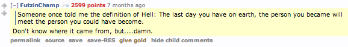

Week Seven - Cultural blog
20 Jul 2014
Exploring your values
When I think of a time in my life that I was most happy, satisfied or proud, the following values come to mind:
- Personal development
- Persistance
- Freedom
- Competition
- Decisiveness
- Challenge
- Ambition
- Creativity
- Helping society
- Independence
- Adventure
- Courage
Personal development is the most important value to me: a few times in my life I've gone through periods of 'just getting by', not in the financial sense, but in the sense that it was a time when I don't feel like I really achieved anything or changed as a person. These were sometimes linked to other things going on in my life at the time - bad relationships or depressing working environments, but other times, for no reason at all, I just lost my motivation to become more than I was.
I can't pinpoint an exact moment of clarity or event that sparked a revelation, but at some point I decided to not put myself through that again. It's an ongoing and constantly evolving progress with occasional stumbles, but every day I make a concerted effort to become the best 'me' that I can be. Related to this, the following quote is a big source of motivation to me:
Rating my values
For each of my values, I have scored 1-5 on how much I try to live up to them:
- 5 - Personal development
- 3 - Persistance
- 4 - Freedom
- 4 - Competition
- 4 - Decisiveness
- 4 - Challenge
- 5 - Ambition
- 5 - Creativity
- 4 - Helping society
- 4 - Independence
- 5 - Adventure
- 4 - Courage
Advice
Every day I get asked questions or asked for quick advice on random subjects, but the last time someone asked for advice that really stands out was probably when my younger cousin was interested in game development. He had heard that I had some experience in it and, like most kids his age, wanted to give it a try. When I was his age and was interested in game development, I didn't have anyone to ask, so I really did my best to give good advice and find a decent balance between encouragement and not overwhelming him with information. I gave him a few options of where to start and a few initial steps to take (e.g. you're not going to make the next Call of Duty as your first game).
Values and Stereotype threat
Thinking about my values motivates me to better myself and push onwards - they serve as a good reminder of who I want to be, should I ever find myself discouraged, whether due to stereotype threat or any other unforeseen obstacle.
In my personal development journey, I've found a few common factors that have always helped keep me on track - exercise, diet and rest (both mental and physical). Regular exercise has definitely had the most prominent positive effect on my life. My diet does occasionally fall into disarray, but I've become far better at noticing when it does and therefore don't see the occasional lapse as the end of the world. I can see sleep becoming a big part of DBC - we will be working long hours and taking in a considerable amount of material every day, so a good amount of decent sleep every night will be vitally important. I am quite lucky in that I will be living a mere five minute walk from DBC, so thankfully I won't have a long commute to and from the office every day!